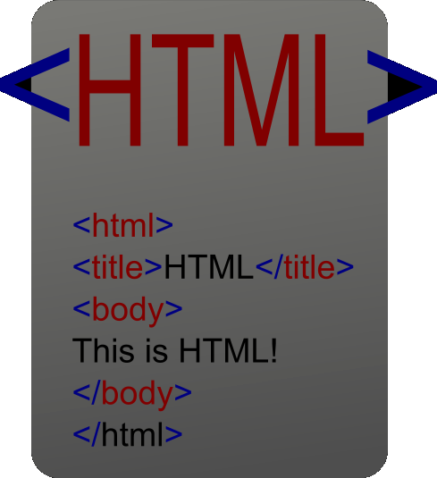
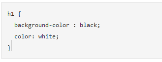

Notions that are Important
World Wide Web and HTML
The internet is comprised of computers that are network together to form the web. These computers communicate together. If you type a web address such as www.dogpile.com a request called a HTTP Requestis sent to a server. Then server computer then finds the HTML document and send it back to the computer that made the request. It displays the content in the computer’s browser. HTML is was glue everything together. Hyper Links is what makes the Web Web-like. Invented in the early 1990s and has about 30 billion pages.

The heart of the Web are the HTML documents. HTML documents display the information & contents on the web. HTML is the abbreviation of Hypertext Markup Language. The documents contain text content which shows "what you see", markup which shows "how it looks", references to other documents like video or images and links to other pages.

HTML documents contain HTML Elements. When creating an HTML document we use different types of elements by using HTML Tags to tell the computer’s browser what to display. An element has an opening tag and/or a closing tag. Eg. < name > content < / name >. Attributes provide additional information about an element. They come in name/value pairs like: name="value".
Elements are either Inline or Block on an HTML document. Inline elements will occupy the same line if there is room. Block elements take up a full like and forms an "invisible box" around the content inside of them. Eg. The Span Tag is inline and the Div Tag is block.
An HTML document has two main parts: the Head and the Body. But firstly every HTML document should start by declaring that it is an HTML document by using the HTML tag. When programmers talk about the "DOM" (Document Object Model) they are talking about the tree-like structure of a page.

- html = Tag that surround the document and it tells the browser this is HTML document.
- head = Tag that includes the tittle (the tittle shows on the top of you browser or tab) and metadata. It also can include Javascript and CSS.
- body = The content of the document. What you see in the screen.
Programmers often describe Computers as stupid. They (usually) aren't insulting computers. Computers are not smart and they are indeed stupid because they interpret instructions literally. If a programmer makes a very small mistake it can cause a huge problem in a program. They are not smart enough to figured out the mistake and fix it.
CSS and how it gives style to HTML
CSS stands for Cascading Style Sheet and they give programmers a way to control the style of related HTML elements. You can also think about CSS as a search and replace tool: you identify a class or a tag of the element you want to find (or match, in CSS terminology Cascading means that rules are applied not only to the elements they directly match, but also to all of those elements' child elements. However, if a child element has multiple, overlapping rules defined for it, the more specific rule takes effect. Styles can be defined in different places and are applied in the following order, with definitions further down the list overwriting previous definitions
If you want to write CSS that makes all h1 elements have a black background and white text, you would write:

In this example, the h1 is a selector. It says to the browser "I want you to apply the rules I'm about to tell you to every h1 element." After the h1 there is a left curly brace { and at the bottom there is a matching right curly brace }. Everything between these curly braces will be interpreted as a "rule" that should be applied to every h1 element. The line of code that says background-color : black; is declaration. background-color is a property and black is the value of that property.
Span represents an inline portion of a document, for example words within a sentence. Div represents a block-level portion of a document such as a few paragraphs, or an image with its caption. Neither element has any meaning in itself but they allow semantic attributes (e.g. lang="en-US"), CSS styling (e.g. color, typography) or client-side scripting like JavaScript (e.g. animation, hiding, augmentation) to be applied.
Tools of the Trade
HTML, CSS and JavaScript are "languages" and they all have a syntax and rules. HTML files are the walls; they are the structure and framework of the page design. CSS controls the "style" of a page (how it looks). The style; like the color of the walls and the carpets. JavaScript is the interactive components; like the garage door opener or the TV remote control. They change some element of the house. (DRY) Don’t repeat yourself is a principle of software development, aimed at reducing repetition of information of all kind. Each significant piece of functionality in a program should be implemented in just one place in the source code.
Every modern web browser includes a powerful suite of developer tools. These tools do a range of things, from inspecting currently-loaded HTML, CSS and JavaScript to showing which assets the page has requested and how long they took to load.
When writing code, programmers use special text editors (like Sublime Text for example). These editors make the programmer's life easier. For example, some text editors will automatically generate a closing HTML tag when you write an opening tag.